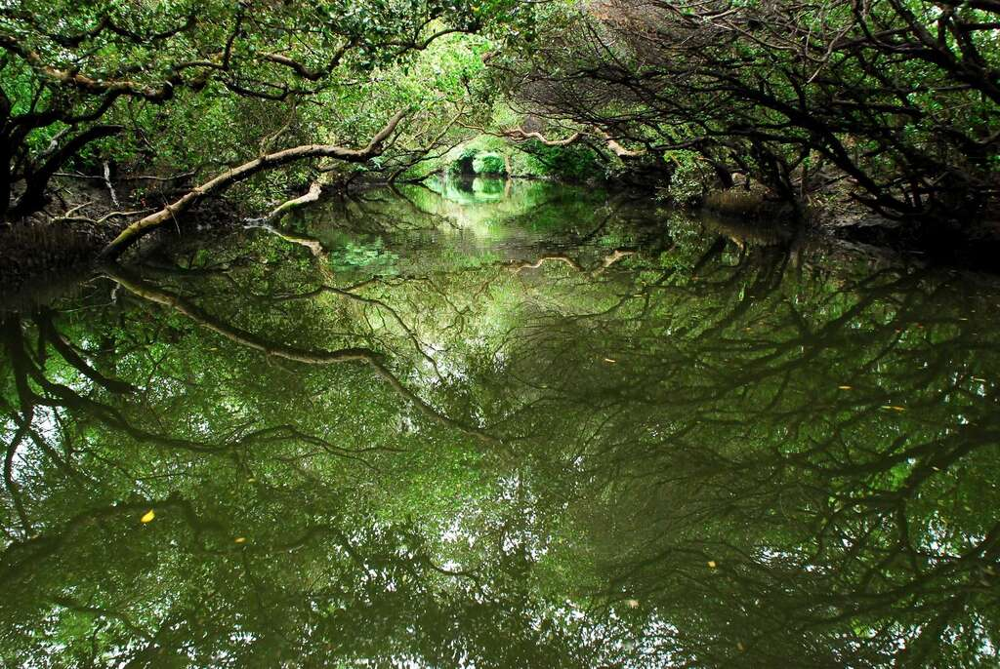
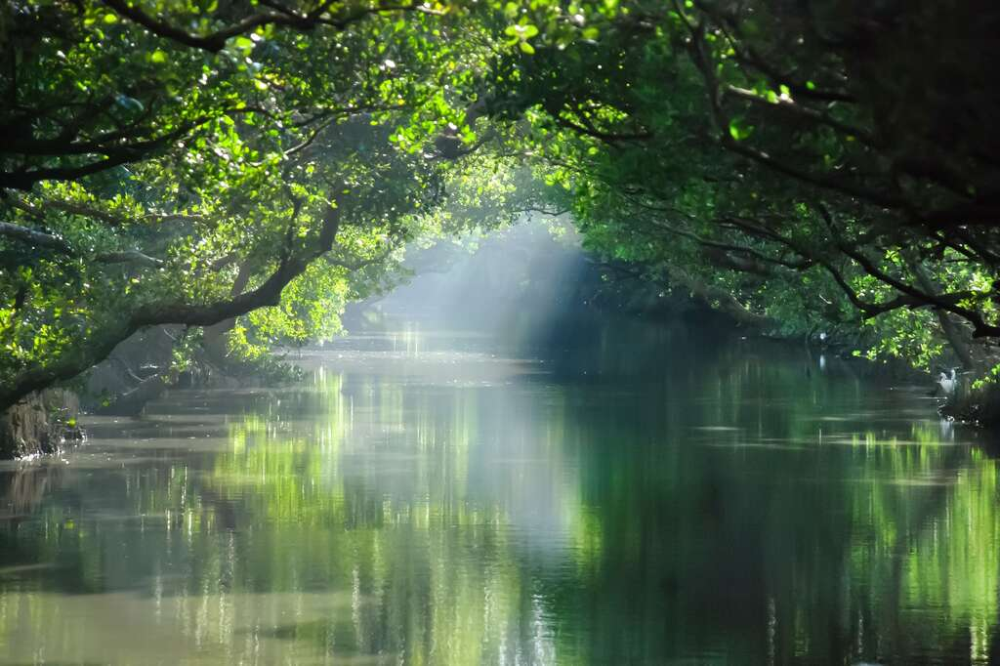
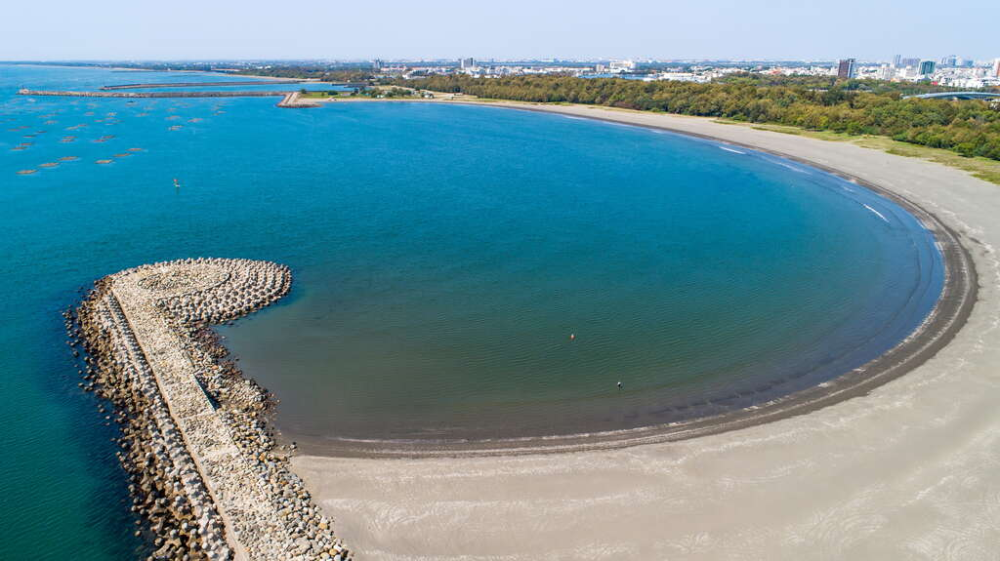
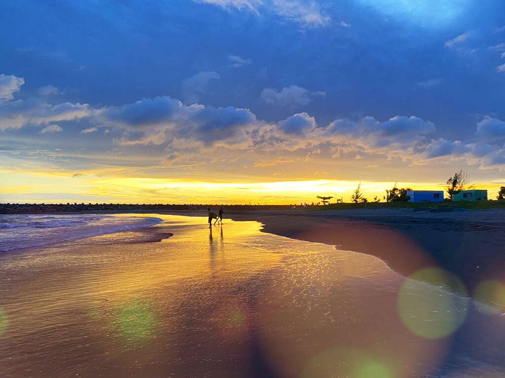

四草綠色隧道
兩旁的紅樹林向中央生長齊聚，交織出茂密的半圓綠頂，一層一層的向前方疊出深邃的廊道，不知盡頭而顯得神秘，四草綠隧也因此有了小亞馬遜之稱。國內外遊客紛至沓來，
長長的等候為得是乘上通往這座仙境的管筏，隨著波紋緩緩前行，微風掠過輕撫臉頰，承載陽光溫暖的重量，穿梭在這座城市秘境裡。
乘船起點，四草大眾，四草大眾廟奉祀主神「鎮海元帥」，大眾廟建廟迄今已三百餘年，為安南區四草的信仰中心。廟旁還有小小的抹香鯨博物館，
存放著擱淺的抹香鯨母子標本。將海洋生態與歷史沉澱在這裡。紅樹林生態，小小的招呼，乘上管筏，展開這趟綠色之旅，四周蟲鳴鳥叫為船隻的前行伴奏，綠葉隨風搖曳，踩著節奏從間隙中漏出陽光。兩旁的濕地沿岸有彈塗魚躍動、招潮蟹揮螯，相當熱鬧。
開放時間：每日上午08:00-晚上16:00
地 址：臺南市安南區大眾路(四草大眾廟旁)
服務專線：+886-6-2841610


四草綠色隧道
漁光島
「漁火點點，半月沉江」遺世獨立的月牙灣，漁光島，與熙來攘往的安平區僅隔一座漁光大橋相連，舊稱三鯤鯓。從前漁船在夜間點燈以吸引魚隻，
遠望過去，漆黑的海上遍佈耀眼的漁光點點，因而得名「漁光島」，更有「漁火點點，半月沉江」的佳言美句流傳，遊客可漫步於沙灘，感受海風的親撫。
以遠方無死角的夕陽為背景，沐浴在溫暖的橙色光輝下，夕照帶來的橙色光輝將月牙灣染成一片綿延的橘橙，遠方的金黃落日清晰可見，造就了這番著名景致。
除夕照外，白日前來也頗有一番風趣。試想悠閒地盤腿坐在柔軟的沙地上，遠眺著遠方的碧藍海天一線，以及青藍海水上的波光粼粼；耳畔傳來海浪拍擊的聲響；
呼吸著空氣中屬於海的淡淡鹹味，還有甚麼比這更能療癒人心？
開放時間：全日開放
地 址：臺南市安平區漁光路118號
服務專線：+886-927-299-000


漁光島